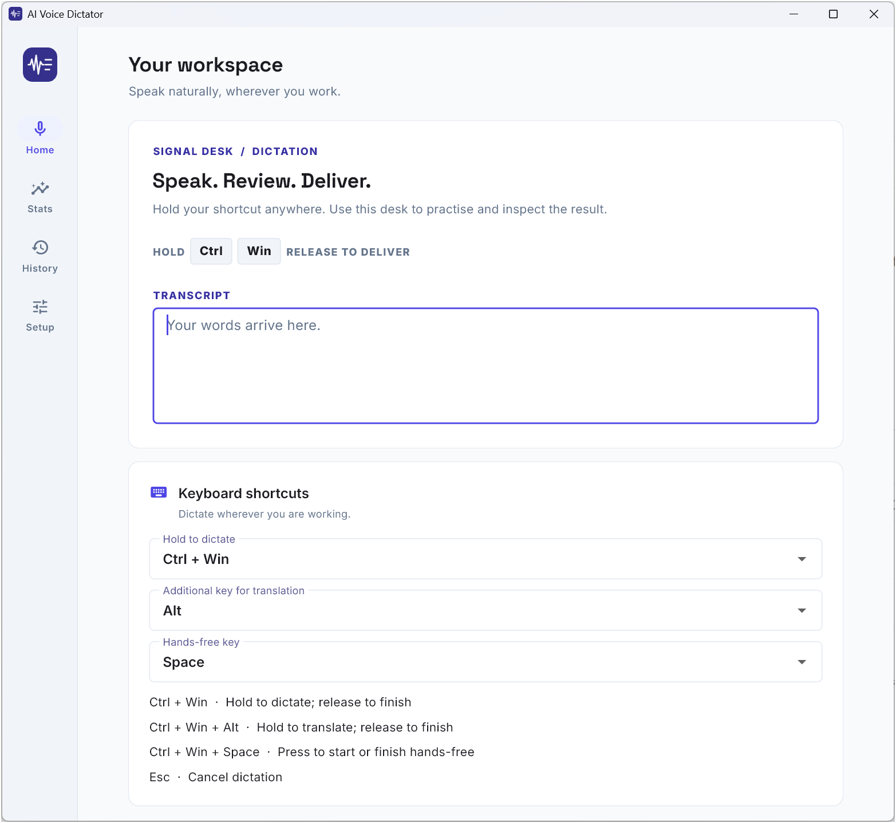

Hold your shortcut
Press and hold Ctrl + Win in your active window.
Turn your thoughts into text wherever you work. Speak naturally in Bangla, English, or a mix of both.
Windows 10 & 11 · Bring your own Gemini API key


A LITTLE LESS BETWEEN YOU AND THE PAGE
From a quick message to a longer thought, start dictating without breaking your flow.
Press and hold Ctrl + Win in your active window.
Say what you want to write. The floating HUD lets you see when it’s listening.
Your speech is processed, then sent to the active field and saved in history.
Prefer hands-free? Press Ctrl + Win + Space to start or stop. Shortcuts are configurable.
SMALL APP. BIG IDEAS.
Everything you need to go from an idea to words on your screen.
Move between Bangla and English naturally. Use the translation shortcut when you need words in another language.
The floating HUD shows listening, processing and completion while you work in other apps.
Explore your dictation history, speaking pace and audio duration statistics.
Choose your microphone, shortcuts, Gemini model and dictation prompt in Setup.
THERE WHEN YOU NEED IT
The floating HUD keeps you informed without taking over your screen. Listen, process, done.
Explore the HUD

A NOTE ON YOUR DATA
Use your own Gemini API key. Audio is sent to Google’s Gemini API for transcription; your transcript history is stored locally and your key uses Windows secure storage.
Read how it worksREADY WHEN YOU ARE
Download AI Voice Dictator and let your ideas do the talking.
Download for Windows